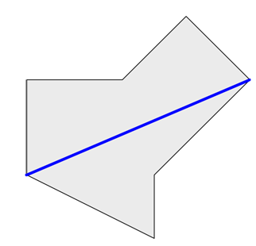

位于热带的 Piconesia 岛国以其秀丽的沙滩、繁茂的植被、可可与咖啡原料的产出以及全年宜人的天气而闻名海
外。天堂般美丽的这里将纳入未来举办 ACM-ICPC 世界总决赛的地点考虑名单中(至少也会是执行委员会度假地点
的选择之一) 。但是还有一个小问题:这个岛真的很难到达。就目前而言,最快的方式是从最近的机场出发,并借助
渔船、油轮、皮划艇和潜艇这些工具,花费三天时间才能到达小岛。为了让大家更轻松地参加 ICPC 世界总决赛,也
为了推动小岛的旅游业发展,Piconesia 正在计划修建它的第一个机场。考虑到越长的起降跑道越有助于对大型飞
机的支持, Piconesia 决定在其岛上修建一条最长的起降跑道带。不幸地是,他们无法确定这条跑道应该设置在哪
里。也许你可以帮个忙?对于本题,我们将 Piconesia 的边界抽象成一个多边形的模型。根据这个多边形,你需要计
算出最长的跑道长度(即最长的线段)使得跑道可以完全在小岛上修建。图 1 对应于第一个输入样例。

图 1. 小岛的多边形模型。最长的跑道已用粗线标出。